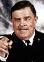

Майкл Китон - Бетмен/Брюс Уэйн
Майкл Китон - Бетмен/Брюс УэйнАмериканский супергеройский фильм режиссёра Тима Бёртона, основанный на комиксах о Бэтмене — известном персонаже DC Comics. Фильм имеет характерную для Бёртона «готическую» визуальную стилистику и мрачноватую атмосферу. Главную роль исполнил Майкл Китон, также в фильме приняли участие Джек Николсон, Ким Бейсингер, Роберт Вул и Джек Пэланс. В фильме Бэтмен противостоит злодею, который известен под псевдонимом Джокер. Данный фильм послужил первой частью целой серии фильмов о Бэтмене от компании Warner Bros.
После того, как Бёртон был назначен режиссёром, сначала Стивен Энглхарт и Джули Хиксон сделали заготовки сюжета, затем Сэм Хэмм приступил к написанию сценария, но съёмки ещё не начались. Фильму был дан «зелёный свет» только после успеха другого фильма Тима Бёртона — «Битлджус», который вышел в 1988. На роль Бэтмена рассматривались многие известные актёры. Николсон согласился на роль Джокера лишь после того, как ему пообещали высокий гонорар, плюс доход от сборов и удобный график съёмок.
Съёмки фильма проходили в Pinewood Studios в период с октября 1988 по январь 1989 года. Изначальный бюджет в 30 миллионов долларов был значительно превышен и составил 48 миллионов долларов. Из-за забастовки сценаристов в 1988 году Хэмм был вынужден покинуть проект. Заканчивали сценарий Уоррен Скаарен, Чарльз Маккаун и Джонатан Гемс, хотя их имена не были указаны в титрах. «Бэтмен» был финансово успешен, заработав в общей сложности более 400 миллионов долларов. Фильм заработал несколько номинаций на премию «Сатурн», был номинирован на «Золотой глобус», а также выиграл премию «Оскар». Огромный успех фильма в 1992 году вдохновил создателей мультсериала «Бэтмен», который был награждён премией «Эмми». Фильм оказал немалое влияние на весь Голливуд, способствуя развитию такого жанра, как фильмы о супергероях.
Майкл Китон - Бетмен/Брюс Уэйн
Джек Николсон - Джокер/Ждек Напье
Ким Бейсингер - Викки Вейл
 Пэт Хингл - Комисар Гордон